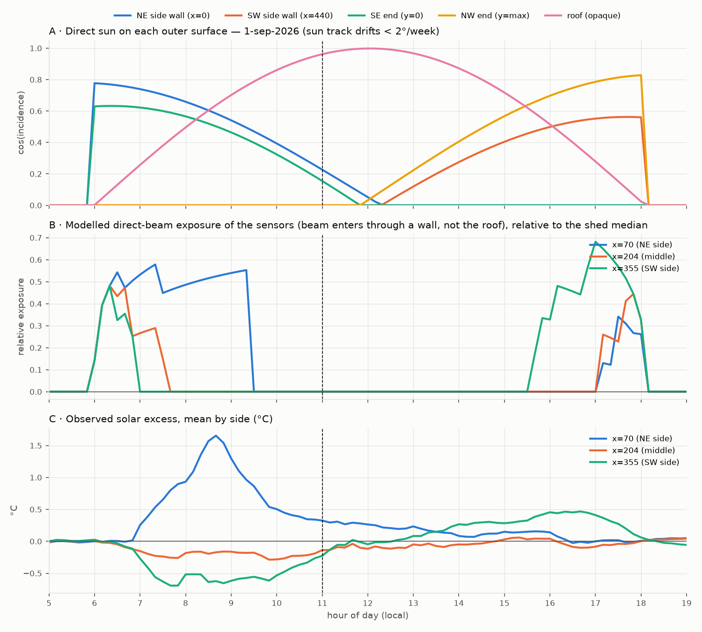
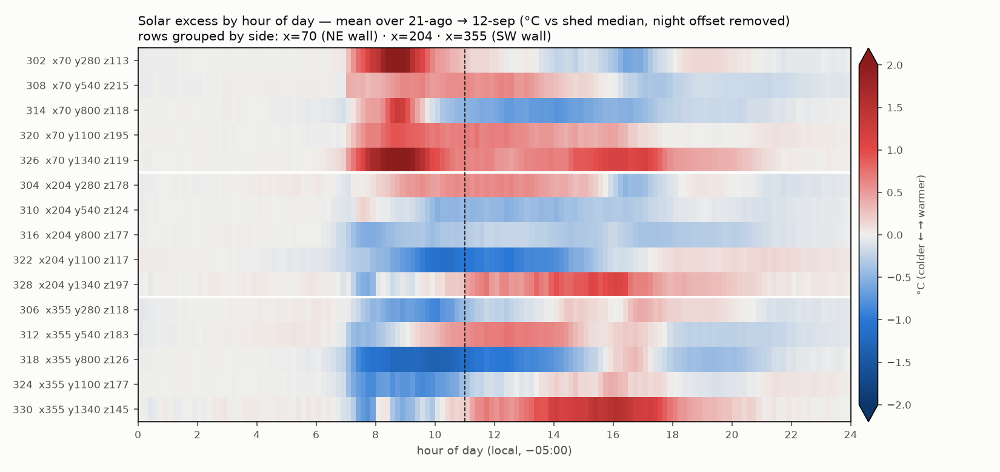
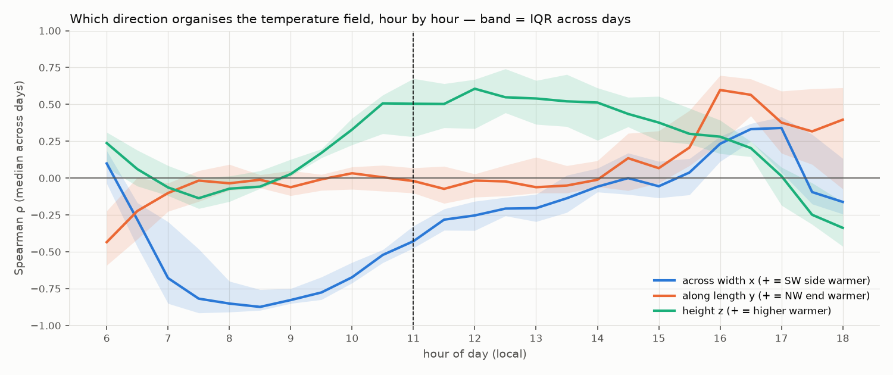
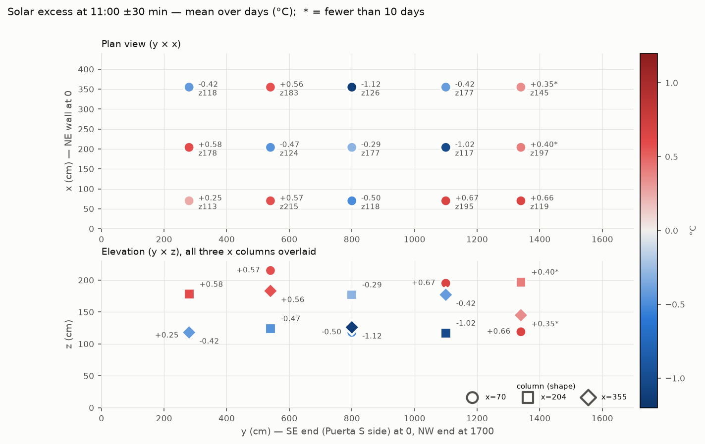

La marquesina: cómo está orientada y por dónde le pega el sol
Antes de hablar del aire hay que ubicarse. La marquesina mide 17 metros de largo y 4,4 de ancho, y casi todo lo que pasa adentro depende de qué lado mira al sol.
Lo que hay que saber del lugar
- Las dos puertas están en la pared que mira al noreste. Las dos ventanas, arriba, en la pared que mira al suroeste.
- "Ventana E" y "Ventana O" son nombres de posición a lo largo de la marquesina: la E está hacia el extremo sureste y la O hacia el extremo noroeste. No indican hacia dónde mira la pared.
- Hay 15 puntos de medición adentro, cada uno con humedad y temperatura, en 5 líneas (L1 a L5) de 3 sensores. Están entre 1,1 y 2,2 metros de altura. Hay 3 más afuera, del lado de las puertas, bajo una cubierta transparente.
- El techo es opaco y de una sola caída: 2,75 m del lado de las puertas, 2,30 m del lado de las ventanas. Las paredes son de plástico de invernadero.
- Las camas de secado están en tres niveles: a 55, 90 y 140 cm del piso.
El sol: de mañana calienta el lado de las puertas, de tarde el de las ventanas
-
Sólido
El lado de las puertas se calienta primero, entre las 7 y las 9 de la mañana. El lado de las ventanas sigue fresco toda la mañana y se calienta en la tarde.
A esta latitud el sol sale casi por el oriente y al mediodía pasa casi encima. Lo que decide cuándo se calienta un sensor es de qué lado del ancho está, no su altura ni su posición a lo largo.
-
Sugestivo
A las 11 de la mañana, en el centro de la marquesina, el aire ya se ordena por altura: más caliente arriba, más fresco abajo, como cuando calienta el techo.
Esto se ve todos los días. Que sea por el sol sobre el techo se apoya en un solo indicador indirecto, así que es una explicación probable, no probada. Por eso el modelo usa las 11:00.

El café húmedo no cambió este patrón de temperatura de las 11:00: con y sin café, los sensores dan casi el mismo cuadro.
Detalle técnico orientación, orden de calentamiento, el corte de las 11:00
Orientación. El eje largo apunta a 312° (noroeste). Un modelo de sol directo solo se ajusta a lo que miden los sensores si la pared de las puertas mira al noreste (r = +0,37, con 30 min de desfase), no si mira al suroeste (r = −0,14). Los sensores externos lo confirman sin modelo: llegan a su máximo a las 10:20–10:30 (adentro, a las 14:00) y están 1–2 °C sobre el interior en la mañana y 2–2,6 °C por debajo en la tarde.
Orden de calentamiento. La hora en que cada sensor empieza a calentarse depende solo de su posición a lo ancho (+2,6 h por desviación estándar, p = 0,001); ni el largo (p = 0,44) ni la altura (p = 0,80) importan. Los dos sensores bajos del lado NE en los extremos (302 y 326) llegan a +3,4 °C hacia las 8:40. Los sensores están bien protegidos de la radiación directa, así que es calentamiento real del aire. El efecto de la mañana es solar: la diferencia NE−SO de cada día sigue al calentamiento matutino de los sensores externos (ρ = +0,87, p < 0,001, 16 días).
11:00. La correlación del calentamiento con la altura es ρ = +0,50 y con el ancho ρ = −0,43 (negativa los 19 días). La estratificación de las 11:00 acompaña al calentamiento externo acumulado hasta las 11 h (ρ = +0,54, p = 0,03, 16 días). Es uno de varios indicadores probados: apoyo, no prueba. Los promedios por sensor a las 11:00 con y sin café correlacionan r = 0,95.
Límites. Los sensores externos están bajo una cubierta con ~15 % de sombra: sirven como índice de sol, pero exageran la temperatura del aire al mediodía. El modelo de sol es simple (sin aleros ni obstáculos): acierta la hora y el lado, no los tamaños.


